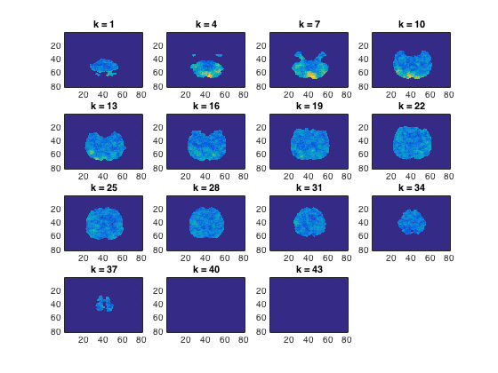

Spherical searchlight
this example implements a spherical searchlight using cosmo_spherical_neighborhood and performs crossvalidation with a nearest neigh classifier
Note: for running searchlights it is recommended to use cosmo_searchlight and cosmo_spherical_neighborhood
- For CoSMoMVPA's copyright information and license terms, #
- see the COPYING file distributed with CoSMoMVPA. #
Contents
Set up parameters
config=cosmo_config(); data_path=fullfile(config.tutorial_data_path,'ak6','s01'); output_path=fullfile(config.output_data_path); fn=fullfile(data_path,'glm_T_stats_perrun.nii'); maskfn=fullfile(data_path,'brain_mask.nii'); radius=3; targets=repmat(1:6,1,10); chunks=floor(((1:60)-1)/6)+1; classifier=@cosmo_classify_nn; classifier_opt=struct();
load data and set sample attributes
ds=cosmo_fmri_dataset(fn, 'mask', maskfn, ... 'targets', targets, ... 'chunks', chunks); fprintf('Input dataset:\n'); cosmo_disp(ds);
Input dataset:
.a
.vol
.mat
[ -3 0 0 121
0 3 0 -114
0 0 3 -11.1
0 0 0 1 ]
.xform
'scanner_anat'
.dim
[ 80 80 43 ]
.fdim
.labels
{ 'i'
'j'
'k' }
.values
{ [ 1 2 3 ... 78 79 80 ]@1x80
[ 1 2 3 ... 78 79 80 ]@1x80
[ 1 2 3 ... 41 42 43 ]@1x43 }
.sa
.targets
[ 1
2
3
:
4
5
6 ]@60x1
.chunks
[ 1
1
1
:
10
10
10 ]@60x1
.samples
[ 0.933 0.000495 2.1 ... 0.681 0.626 0.421
-0.772 0.117 1.73 ... 0.723 0.892 1.7
0.621 1.52 -0.25 ... -0.341 -0.832 -0.546
: : : : : :
-2.37 -1.92 -0.879 ... 0.784 0.67 0.522
-0.261 0.351 -0.0767 ... 2.81 2.27 -0.947
-1.29 -0.964 -0.966 ... 0.827 0.833 0.991 ]@60x43822
.fa
.i
[ 35 36 44 ... 46 47 47 ]@1x43822
.j
[ 17 17 17 ... 35 35 36 ]@1x43822
.k
[ 1 1 1 ... 39 39 39 ]@1x43822
define centers of searchlight
nfeatures=size(ds.samples,2); center_ids=1:nfeatures;
use voxel selection function
nbrhood=cosmo_spherical_neighborhood(ds, 'radius',radius); center2neighbors=nbrhood.neighbors; ncenters=numel(center2neighbors); % should be equal to 'nfeatures'
+00:00:07 [####################] -00:00:00 mean size 111.5
set up cross validation
(here we use cosmo_oddeven_partitioner; cosmo_nfold_partitioner would be another possiblity, with the advantage of using a larger training set, but the disadvantage that it takes longer to run)
partitions=cosmo_oddeven_partitioner(ds.sa.chunks);
Allocate space for output
ncenters=numel(center_ids); accs=zeros(1,ncenters);
Run the searchlight
go over all features: in each iteration, slice the dataset to get the desired features using center2neighbors, then use cosmo_crossvalidate to get classification accuracies (it's its second output argument), and store the classiifcation accuracies.
Note: it is generally easier (and faster) to use cosmo_searchlight and cosmo_crossvalidation_measure; this example here is for illustrative purposes mainly
% use cosmo_show_progress to show a pretty progress bar prev_msg=''; clock_start=clock(); show_progress_every=1000; for k=1:ncenters % >@@> center_id=center_ids(k); sphere_feature_ids=center2neighbors{center_id}; sphere_ds=cosmo_slice(ds, sphere_feature_ids, 2); % run cross validation [pred_cv,acc]=cosmo_crossvalidate(sphere_ds, classifier, ... partitions, classifier_opt); % for now, just store the accuracy (not the predictions) accs(center_id)=acc; % <@@< % show progress every 1000 steps, and at the beginning and end. if k==1 || mod(k,show_progress_every)==0 || k==nfeatures mean_so_far=mean(accs(1:k)); msg=sprintf('accuracy %.3f (%d features visited)', mean_so_far, k); prev_msg=cosmo_show_progress(clock_start,k/ncenters,msg,prev_msg); end end
+00:07:00 [####################] -00:00:00 accuracy 0.202 (43822 features visited)
store the output
this uses the neighborhood from spherical voxel selection, after removing the fields neighbors and origin
res_map=nbrhood;
res_map=rmfield(res_map,{'neighbors','origin'});
res_map.samples=accs;
% little sanity check
cosmo_check_dataset(ds);
fprintf('Output dataset:\n');
cosmo_disp(res_map);
output_fn=fullfile(output_path, 'spherical_neighborhood_searchlight.nii');
cosmo_map2fmri(res_map, output_fn);
fprintf('Output written to %s\n', output_fn);
Output dataset:
.a
.vol
.mat
[ -3 0 0 121
0 3 0 -114
0 0 3 -11.1
0 0 0 1 ]
.xform
'scanner_anat'
.dim
[ 80 80 43 ]
.fdim
.labels
{ 'i'
'j'
'k' }
.values
{ [ 1 2 3 ... 78 79 80 ]@1x80
[ 1 2 3 ... 78 79 80 ]@1x80
[ 1 2 3 ... 41 42 43 ]@1x43 }
.fa
.nvoxels
[ 42 46 45 ... 41 41 38 ]@1x43822
.radius
[ 3 3 3 ... 3 3 3 ]@1x43822
.center_ids
[ 1 2 3 ... 4.38e+04 4.38e+04 4.38e+04 ]@1x43822
.i
[ 35 36 44 ... 46 47 47 ]@1x43822
.j
[ 17 17 17 ... 35 35 36 ]@1x43822
.k
[ 1 1 1 ... 39 39 39 ]@1x43822
.samples
[ 0.2 0.0833 0.35 ... 0.267 0.183 0.117 ]@1x43822
Output written to /Users/nick/organized/tmp/cosmo_output/spherical_neighborhood_searchlight.nii
Plot a few slices
cosmo_plot_slices(res_map);